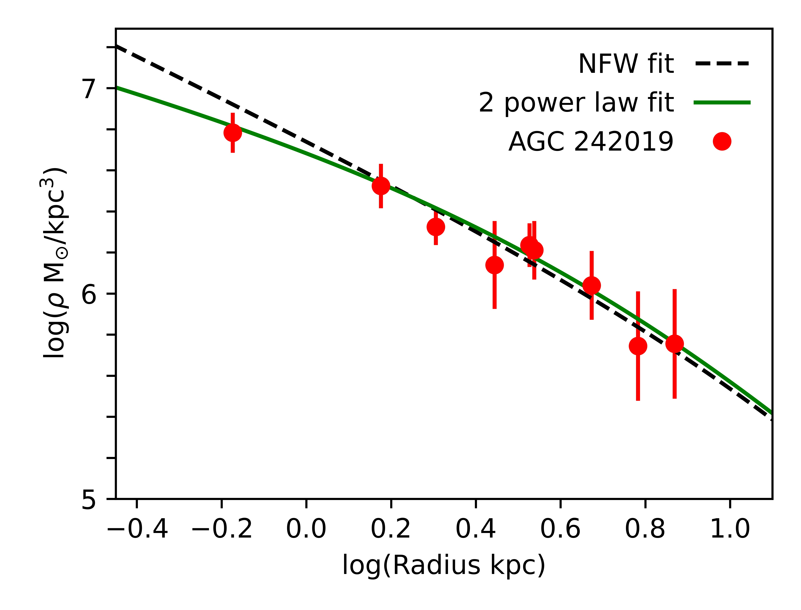
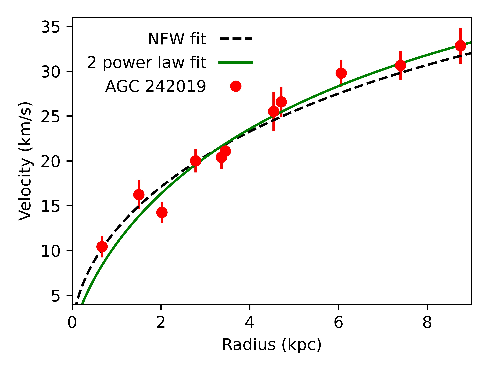
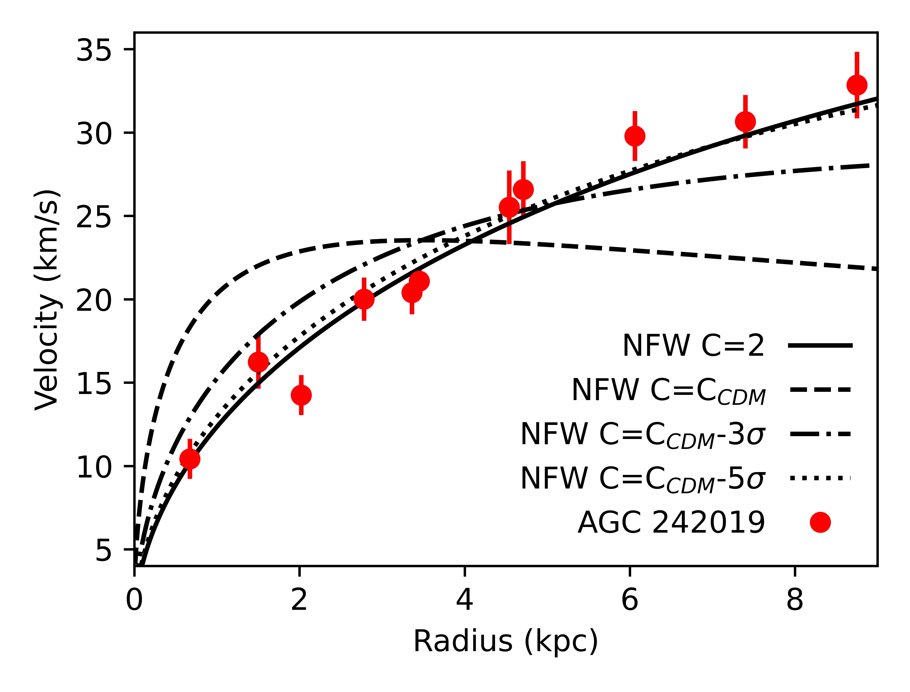
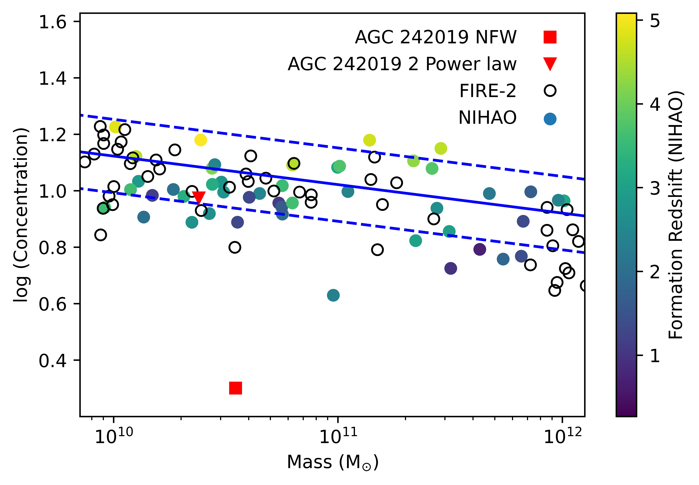
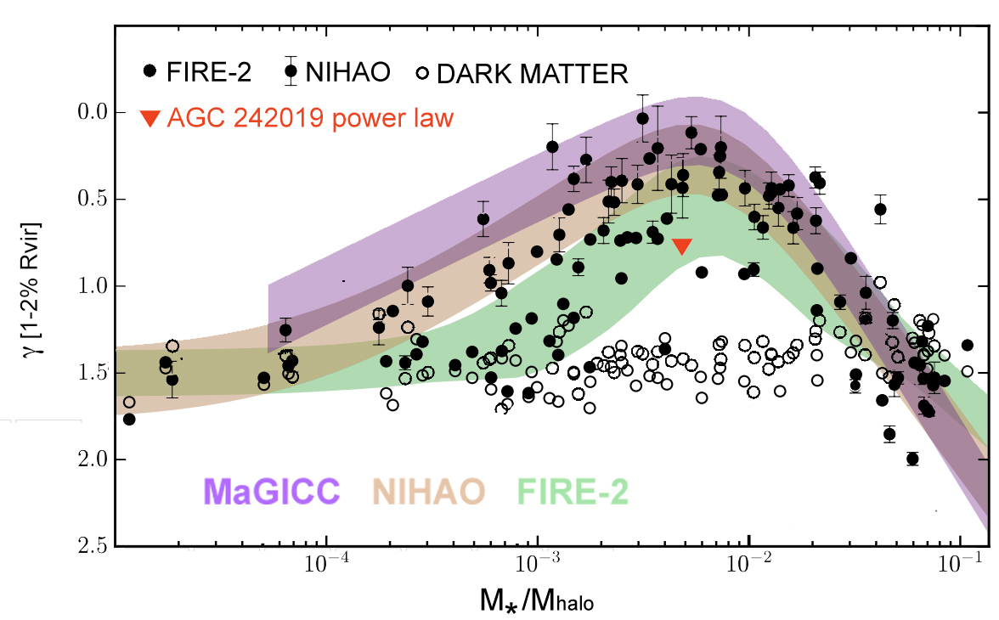

هالة مادة مظلمة ضحلة في المجرة فائقة الانتشار AGC 242019:
هل تشبه UDGs بنيوياً المجرات منخفضة السطوع السطحي؟
الملخص
تتمثل مسألة مركزية تخص المجرات فائقة الانتشار (UDGs) في ما إذا كانت تشكل فئة منفصلة عن المجرات منخفضة السطوع السطحي (LSB)، أم أنها مجرد امتدادها الطبيعي نحو الكتل النجمية المنخفضة. نبيّن في هذه الرسالة أن منحنى دوران المجرة فائقة الانتشار الغنية بالغاز AGC 242019 يلائمه جيداً نموذج هالة من المادة المظلمة ذات انحدار داخلي يتقارب حدياً إلى  -0.54، وأن هذا الملاءمة تعطي معامل تركيز يوافق التوقعات النظرية. وتُظهر هذه النتيجة، مع أعمال سابقة استُخلصت فيها ملفات داخلية ضحلة للمجرات فائقة الانتشار، أن الخصائص البنيوية لهذه المجرات تشبه خصائص المجرات منخفضة السطوع السطحي المرصودة الأخرى. وتُظهر UDGs منحنيات دوران ترتفع ببطء، وهذا يرجّح سيناريوهات تشكل تعمل فيها عمليات داخلية، مثل تدفقات الغاز الخارجة المدفوعة بالمستعرات العظمى، على تعديل ملفات UDGs.
-0.54، وأن هذا الملاءمة تعطي معامل تركيز يوافق التوقعات النظرية. وتُظهر هذه النتيجة، مع أعمال سابقة استُخلصت فيها ملفات داخلية ضحلة للمجرات فائقة الانتشار، أن الخصائص البنيوية لهذه المجرات تشبه خصائص المجرات منخفضة السطوع السطحي المرصودة الأخرى. وتُظهر UDGs منحنيات دوران ترتفع ببطء، وهذا يرجّح سيناريوهات تشكل تعمل فيها عمليات داخلية، مثل تدفقات الغاز الخارجة المدفوعة بالمستعرات العظمى، على تعديل ملفات UDGs.
1 المقدمة
تُظهر المجرات منخفضة السطوع السطحي (LSBs) عموماً منحنيات دوران ترتفع ببطء (مثلاً Impey and Bothun 1997; Bothun et al. 1997). وبفضل محتواها الباريوني المنخفض، يمكن استخدام ديناميكيات الغاز لتقدير توزيع مادتها المظلمة على نحو موثوق، ويتبيّن أن أفضل ملاءمة له تكون بنماذج ذات كثافة داخلية مسطحة (مثلاً de Blok et al. 2001, 2008; Oh et al. 2011; Lelli et al. 2016; Katz et al. 2017). وقد استخدمت النماذج المبنية تجريبياً لهذه الملفات إلى حد كبير «أنوية» داخلية تتقارب حدياً إلى انحدار صفري عند أصغر أنصاف الأقطار (Burkert 1995). وفي المقابل، تمتلك هالات المادة المظلمة التي تتشكل ضمن محاكاة كونية تعتمد الجاذبية وحدها ملفات كثافة داخلية «مدببة»، تتقارب حدياً إلى انحدار يساوي ناقص واحد (Navarro et al. 1996b، ملف «NFW»).
أظهرت نماذج نظرية أحدث، مبنية على محاكاة هيدروديناميكية ضمن كوسمولوجيا المادة المظلمة الباردة، أن تدفقات الغاز الخارجة يمكن أن تسبب تمدد المادة المظلمة (مثلاً Navarro et al. 1996a; Read and Gilmore 2005; Governato et al. 2010; Macciò et al. 2012; Pontzen and Governato 2012). وتسمح هذه النماذج بمدى أوسع من الكثافات الداخلية، يعتمد أساساً على الكتلة النجمية والكتلة الكلية للمجرة (Di Cintio et al. 2014b, a; Tollet et al. 2016; Chan et al. 2015). وقد تبين أن ملفات الكثافة المعتمدة على الكتلة هذه توفر ملاءمات أفضل لمنحنيات دوران المجرات المرصودة مقارنة بالملفات ذات التشابه الذاتي الموجودة في محاكاة N-body (Katz et al. 2017; Lazar et al. 2020).
المجرات فائقة الانتشار (UDGs) فئة مثيرة للاهتمام من المجرات، ليس فقط بسبب صعوبات العثور عليها (مثلاً Bothun et al. 1991, 1997; van Dokkum et al. 2015; Román and Trujillo 2017) وتحليلها (مثلاً Ruiz-Lara et al. 2018; Forbes et al. 2021)، بل لأن مكوّنها الباريوني المنتشر يتيح تقييد ملفات كثافة المادة المظلمة الكامنة بدقة، ولا سيما عندما توجد كمية كافية من الغاز داخل قرص تسمح بقياس سرعات الدوران (Mancera Piña et al. 2020; Shi et al. 2021). وقد طُرحت ادعاءات متعددة حول خصائص غير معتادة للمجرات فائقة الانتشار، مثل كميات كبيرة على نحو غير مألوف (van Dokkum et al. 2016) أو صغيرة على نحو غير مألوف (van Dokkum et al. 2018) من المادة المظلمة (انظر مع ذلك Trujillo et al. 2019 وMontes et al. 2020 لدحض هذه الادعاءات)، وكذلك حقيقة أن بعض UDGs تبدو وكأنها تنحرف عن علاقة تولي-فيشر الباريونية (Mancera Piña et al. 2020).
اقتُرحت آليات تشكل مختلفة للمجرات فائقة الانتشار، وللمجرات منخفضة السطوع السطحي بوجه أعم. فالسيناريوهات التي تستدعي التأثيرات البيئية، مثل التسخين المدي وتجريد ضغط الصدم، تكون أكثر صلة بالمجرات فائقة الانتشار الموجودة داخل العناقيد أو المجموعات (Jiang et al., 2019; Martin et al., 2019; Carleton et al., 2019; Tremmel et al., 2020; Sales et al., 2020)، أما بالنسبة إلى UDGs الحقلية المعزولة فقد اقتُرح أنها قد تتشكل في هالات ذيل اللف العالي لمجموعة منتظمة من المجرات القزمة منخفضة السطوع السطحي (Amorisco and Loeb, 2016)، أو أن تقلبات الجهد الثقالي، المدفوعة بالتدفقات الخارجة المجرية، قد تكون قادرة على توسيع التجمعات النجمية داخل هذه المجرات (Di Cintio et al. 2017; Chan et al. 2018؛ انظر أيضاً Teyssier et al. 2013). وأخيراً، يمكن لبعض ترتيبات الاندماج الخاصة أن تضيف زخماً زاوياً إلى القرص و/أو دفعة مؤقتة في اللف، وأن تجعل تشكل النجوم يُعاد توزيعه إلى أطراف المجرات (Di Cintio et al., 2019; Wright et al., 2021).
من المفترض أن تتنبأ آليات التشكل هذه بملفات كثافة مختلفة للمادة المظلمة. فإذا كان السبب هو اللف العالي، فإن عملية تراكم غاز ذي زخم زاوي عال لن تؤثر في المادة المظلمة الكامنة. ومع ذلك، قد يتوقع المرء هالة منخفضة التركيز في مثل هذه الحالات (Macciò et al., 2007)، على الرغم من أن وجود علاقة بين اللف والتركيز ليس محسومًا تماماً: فقد قيل إن العلاقة قد تكون ناجمة عن أنظمة غير مسترخية (Neto et al. 2007; Macciò et al. 2007). أما بخصوص السيناريو الآخر، فإذا كان توزيع نجمي قد تأثر بعمليات التغذية الراجعة، فقد يتوقع المرء أن تتمدد المادة المظلمة أيضاً. وهذا يعني أن قياس ملفات الكتلة الكامنة للمجرات فائقة الانتشار أمر مثير للاهتمام من أجل التمييز بين سيناريوهات التشكل.
وفضلاً عن ذلك، وبما أنه راسخ جيداً أن المجرات منخفضة السطوع السطحي تميل إلى امتلاك ملفات كثافة داخلية مسطحة نسبياً، فمن المهم تحديد ما إذا كانت UDGs تمتلك خصائص مشابهة، الأمر الذي يرجّح علاقة وثيقة بين هاتين الفئتين من المجرات، وقد يشير إلى أن من الأفضل اعتبارهما فئة واحدة من المجرات (انظر McGaugh 1996).
ادعت دراسة حديثة أجراها Shi et al. 2021، ويشار إليها فيما بعد بـ Shi21، أن المجرة فائقة الانتشار الغنية بالغاز AGC 242019، التي حُددت ضمن مسح ALFALFA لمجرات HI (Leisman et al., 2017)، تمتلك منحنى دوران محلولاً جيداً تلائمه على أفضل نحو صيغة NFW مدببة. غير أن الملاءمة المسترجعة لديهم تعطي تركيزاً لهالة المادة المظلمة منخفضاً إلى حد 2، وهي قيمة تبعد بأكثر من 5 عن علاقة c-M المتوقعة عند مثل هذه الكتل (مثلاً Dutton and Macciò 2014).
عن علاقة c-M المتوقعة عند مثل هذه الكتل (مثلاً Dutton and Macciò 2014).
في هذه الرسالة، نبيّن بدلاً من ذلك أن المجرة AGC 242019 تمتلك منحنى دوران تلائمه جيداً هالة من المادة المظلمة ذات انحدار داخلي يتقارب حدياً نحو  -0.54، وأن هذه الملاءمة تعطي معامل تركيز أقرب بكثير إلى المتوقع نظرياً. وهذه النتيجة، مع أعمال منشورة سابقاً استُخلص فيها ملف داخلي ضحل للمجرات فائقة الانتشار (Leisman et al., 2017; van Dokkum et al., 2019)، ترجّح سيناريو تشكل تعمل فيه عمليات داخلية على تعديل الملفات الداخلية لـ UDGs (Di Cintio et al., 2017; Chan et al., 2018)، وتؤكد أن UDGs تشبه المجرات منخفضة السطوع السطحي المرصودة: فهي تُظهر منحنيات دوران ترتفع ببطء.
-0.54، وأن هذه الملاءمة تعطي معامل تركيز أقرب بكثير إلى المتوقع نظرياً. وهذه النتيجة، مع أعمال منشورة سابقاً استُخلص فيها ملف داخلي ضحل للمجرات فائقة الانتشار (Leisman et al., 2017; van Dokkum et al., 2019)، ترجّح سيناريو تشكل تعمل فيه عمليات داخلية على تعديل الملفات الداخلية لـ UDGs (Di Cintio et al., 2017; Chan et al., 2018)، وتؤكد أن UDGs تشبه المجرات منخفضة السطوع السطحي المرصودة: فهي تُظهر منحنيات دوران ترتفع ببطء.
تنظم الورقة على النحو الآتي: تُعرض البيانات والطرائق في القسم 2، وتُقدّم النتائج في القسم 3، بينما تُناقش الخلاصات في القسم 4.
2 البيانات والطرائق
وُجدت بواسطة مسح Arecibo Legacy Fast ALFA (ALFALFA) لمجرات HI (Leisman et al. 2017)، وتُعد AGC 242019 مجرة UDG ذات كتلة نجمية 1.37 108M⊙، وكتلة HI قدرها 8.51
108M⊙، وكتلة HI قدرها 8.51 108M⊙ ومعدل تشكل نجوم قدره 8.210-3M⊙ yr-1.
108M⊙ ومعدل تشكل نجوم قدره 8.210-3M⊙ yr-1.
اشتق Shi21 سرعة دوران المجرة من بيانات HI باستخدام مصفوفة Karl G. Jansky Very Large Array، ومن بيانات H من مطياف Wide-Field Spectrograph على تلسكوب Australian National University ذي القطر 2.3 m. وتوجد تفاصيل البيانات والنمذجة في Shi21، الذين طبقوا نموذج حلقات مائلة على مكعب بيانات HI 3-D باستخدام 3DBarolo (Di Teodoro and Fraternali 2015)، ودمجوا ذلك مع منحنى دوران مشتق من بيانات H
من مطياف Wide-Field Spectrograph على تلسكوب Australian National University ذي القطر 2.3 m. وتوجد تفاصيل البيانات والنمذجة في Shi21، الذين طبقوا نموذج حلقات مائلة على مكعب بيانات HI 3-D باستخدام 3DBarolo (Di Teodoro and Fraternali 2015)، ودمجوا ذلك مع منحنى دوران مشتق من بيانات H بافتراض معلمات الحلقات نفسها. في هذه الدراسة نأخذ ببساطة منحنى الدوران المشتق وملف الكثافة المقابل كما هما. نستخدم النموذج المرجعي لـ Shi21، لكن نتائجنا متينة نوعياً تجاه نماذجهم التي تستخدم نسب كتلة إلى ضوء ومسافات وارتفاعات قرص مختلفة، مع تغيرات كمية صغيرة فقط.
بافتراض معلمات الحلقات نفسها. في هذه الدراسة نأخذ ببساطة منحنى الدوران المشتق وملف الكثافة المقابل كما هما. نستخدم النموذج المرجعي لـ Shi21، لكن نتائجنا متينة نوعياً تجاه نماذجهم التي تستخدم نسب كتلة إلى ضوء ومسافات وارتفاعات قرص مختلفة، مع تغيرات كمية صغيرة فقط.
ثم نستخدم ملف كثافة بقانون قوى مزدوج (Jaffe, 1983; Merritt et al., 2006)، وقد ثبت أنه يقدم نتائج ممتازة على تشكيلة واسعة من المجرات المحاكاة والمرصودة (Di Cintio et al., 2014b; Katz et al., 2017)، لملاءمة البيانات:
| (1) |
حيث إن هو نصف قطر المقياس و هي كثافة المقياس.
و و خاصيتان لكل هالة، ترتبطان بكتلتها وزمن تشكلها
(مثلاً Bullock et al., 2001; Macciò et al., 2007). وللمنطقتين الداخلية
والخارجية انحداران لوغاريتميان هما و،
على الترتيب، بينما ينظم
خاصيتان لكل هالة، ترتبطان بكتلتها وزمن تشكلها
(مثلاً Bullock et al., 2001; Macciò et al., 2007). وللمنطقتين الداخلية
والخارجية انحداران لوغاريتميان هما و،
على الترتيب، بينما ينظم  مدى حدة الانتقال
من المنطقة الداخلية إلى المنطقة الخارجية. ويمتلك ملف NFW
.
مدى حدة الانتقال
من المنطقة الداخلية إلى المنطقة الخارجية. ويمتلك ملف NFW
.

 =-0.54، بينما يبين الخط الأسود المتقطع ملاءمة NFW منخفضة التركيز المشتقة في Shi et al. (2021).
=-0.54، بينما يبين الخط الأسود المتقطع ملاءمة NFW منخفضة التركيز المشتقة في Shi et al. (2021).
3 النتائج
يبين الشكل 1 ملف كثافة DM لـ AGC 242019 المأخوذ من Shi21، على هيئة دوائر حمراء. وتظهر ملاءمتنا ذات قانوني القوى على هيئة خط أخضر متصل. تمتلك الملاءمة Mhalo=2.88 1010M⊙، ونصف قطر مقياس
1010M⊙، ونصف قطر مقياس  = 6.4 kpc، وتركيزاً
= 6.4 kpc، وتركيزاً  = 10.1، وانحداراً داخلياً
= 10.1، وانحداراً داخلياً  = 0.54، وانحداراً خارجياً
= 0.54، وانحداراً خارجياً  = 2.15 ومعلمة انتقال
= 2.15 ومعلمة انتقال  = 0.89. وتظهر ملاءمة NFW المشتقة في Shi21 على هيئة خط أسود متقطع، وتمتلك Mhalo = 3.5
= 0.89. وتظهر ملاءمة NFW المشتقة في Shi21 على هيئة خط أسود متقطع، وتمتلك Mhalo = 3.5 1010M⊙، و= 33.3 kpc و
1010M⊙، و= 33.3 kpc و = 2.0. كانت قيمة
= 2.0. كانت قيمة  المختزلة لملاءمتي قانون القوى وNFW هي 0.2 و0.5 على الترتيب.
المختزلة لملاءمتي قانون القوى وNFW هي 0.2 و0.5 على الترتيب.
يبين الشكل 2 مساهمة المادة المظلمة في منحنى دوران AGC 242019، المأخوذة أيضاً من Shi21، مع ملاءمة قانوني القوى من أعلاه على هيئة خط أخضر متصل وملاءمة NFW من Shi21 على هيئة خط أسود متقطع. كانت قيمة  المختزلة لملاءمتي قانوني القوى وNFW هي 1.5 و1.6 على الترتيب.
المختزلة لملاءمتي قانوني القوى وNFW هي 1.5 و1.6 على الترتيب.
بطبيعة الحال، تمتلك ملاءمة قانوني القوى عدداً أكبر من المعلمات الحرة مقارنة بملف NFW، ولذلك يمكن توقع ملاءمة أفضل. علاوة على ذلك، ومع خمس معلمات حرة، يُعرف أن ملاءمة قانوني القوى متدهورة الحل (Klypin et al. 2001). ولا نزعم هنا أن ملاءمتنا فريدة. ففي الواقع، عند تثبيت  =1 وترك
=1 وترك  و
و حرين، أعطت مجموعة أخرى من المعلمات ملاءمة جيدة تقريباً بالقدر نفسه، مع
Mhalo قدرها 2.5
حرين، أعطت مجموعة أخرى من المعلمات ملاءمة جيدة تقريباً بالقدر نفسه، مع
Mhalo قدرها 2.5 1010M⊙، وتركيز
1010M⊙، وتركيز  = 8.3، و
= 8.3، و =2.32، وانحدار داخلي حدّي
=2.32، وانحدار داخلي حدّي  =0.55. وإذا استُخدم ملف قانون قوى مزدوج مع تثبيت
=0.55. وإذا استُخدم ملف قانون قوى مزدوج مع تثبيت  و
و عند 1 و3 على الترتيب (وهو ملف يشار إليه أحياناً باسم ملف NFW المعمم)، يمكن الحصول على ملاءمة أخرى جيدة تقريباً بالقدر نفسه كما في ملاءمتنا المرجعية ذات قانوني القوى، وذلك باستخدام المعلمات Mhalo قدرها 2.0
عند 1 و3 على الترتيب (وهو ملف يشار إليه أحياناً باسم ملف NFW المعمم)، يمكن الحصول على ملاءمة أخرى جيدة تقريباً بالقدر نفسه كما في ملاءمتنا المرجعية ذات قانوني القوى، وذلك باستخدام المعلمات Mhalo قدرها 2.0 1010M⊙، وتركيز
1010M⊙، وتركيز  = 4.6، وانحدار داخلي حدّي
= 4.6، وانحدار داخلي حدّي  =0.57. ويرد ملخص لمختلف معلمات أفضل ملاءمة في الجدول 1.
=0.57. ويرد ملخص لمختلف معلمات أفضل ملاءمة في الجدول 1.
يمكن رؤية اتجاه واضح في معلمات الملاءمة هذه. فمع تقليل عدد المعلمات الحرة وتثبيت الانحدار الخارجي ثم الداخلي لمطابقة الهالات التي تتشكل في محاكاة تحتوي على مادة مظلمة فقط، تكون الطريقة التي تعوض بها المعلمات للوصول إلى ملاءمة مقبولة هي خفض قيمة التركيز. وبمجرد تثبيت المعلمات عند قيم NFW، أي  ، يصبح التركيز المطلوب منخفضاً جداً، c=2، لكي يُلائم ملف الكثافة ومنحنيات الدوران على نحو معقول.
، يصبح التركيز المطلوب منخفضاً جداً، c=2، لكي يُلائم ملف الكثافة ومنحنيات الدوران على نحو معقول.
يظهر اعتماد شكل الملف على التركيز في الشكل 3، الذي يبين مرة أخرى مساهمة المادة المظلمة في منحنى دوران AGC 242019 على هيئة دوائر حمراء، ثم يعرض ملاءمات NFW مختلفة، أولاً (خط متقطع) بتثبيت التركيز وفق علاقة الكتلة-التركيز من المحاكاة الكونية (Dutton and Macciò 2014)، ثم بتثبيت التركيز ليكون أقل من العلاقة المتوقعة بمقدار 3 (منحنى خط-نقطة)، وأخيراً بأن يكون أدنى من العلاقة المتوقعة بمقدار 5
(منحنى خط-نقطة)، وأخيراً بأن يكون أدنى من العلاقة المتوقعة بمقدار 5 (منحنى منقط).
(منحنى منقط).

 =-0.54، بينما يبين الخط الأسود المتقطع ملاءمة NFW منخفضة التركيز المشتقة في Shi et al. (2021).
=-0.54، بينما يبين الخط الأسود المتقطع ملاءمة NFW منخفضة التركيز المشتقة في Shi et al. (2021).
| Fit type | Mhalo/M⊙ | c | ||
|---|---|---|---|---|
| 2.91010 | 10.1 | 0.54 | 0.2 | |
| 2.51010 | 8.3 | 0.55 | 0.2 | |
| 2.01010 | 4.6 | 0.57 | 0.2 | |
| 3.51010 | 2.0 | 1 | 0.5 |
 كلها حرة في التغير، ثم ثُبت
كلها حرة في التغير، ثم ثُبت  عند قيمة 1، ثم ثُبت
عند قيمة 1، ثم ثُبت  و عند 1 و3 على الترتيب، وأخيراً عُينت لتكون (1,3,1)، أي ملف NFW. وفي كل حالة تُعرض كتلة الهالة المسترجعة، والتركيز، والانحدار الداخلي الحدّي، و
و عند 1 و3 على الترتيب، وأخيراً عُينت لتكون (1,3,1)، أي ملف NFW. وفي كل حالة تُعرض كتلة الهالة المسترجعة، والتركيز، والانحدار الداخلي الحدّي، و المختزلة.
المختزلة.تمتلك هذه الملاءمات تراكيز قدرها 15.7 و5.7 و2.7، وكتل هالة قدرها 1.8e10 109، و6.4
109، و6.4 109، و2.3
109، و2.3 1010 M⊙، على الترتيب، عندما يُجعل التركيز مبتعداً عن العلاقة المتوقعة بمقدار 0
1010 M⊙، على الترتيب، عندما يُجعل التركيز مبتعداً عن العلاقة المتوقعة بمقدار 0 و3
و3 و5
و5 . وتمتلك ملاءمة NFW لبيانات Shi21 تركيزاً، 2.0، يقل بأكثر من 5
. وتمتلك ملاءمة NFW لبيانات Shi21 تركيزاً، 2.0، يقل بأكثر من 5 عن التركيز المتوقع لهالات بمثل هذه الكتلة، وفق محاكاة N-body فقط.
ويؤدي خفض التركيز أيضاً إلى نقل الهالة الملائمة إلى كتلة أعلى، مما يجعلها أكثر توافقاً مع علاقات المطابقة العددية (مثلاً Moster et al. 2013).
عن التركيز المتوقع لهالات بمثل هذه الكتلة، وفق محاكاة N-body فقط.
ويؤدي خفض التركيز أيضاً إلى نقل الهالة الملائمة إلى كتلة أعلى، مما يجعلها أكثر توافقاً مع علاقات المطابقة العددية (مثلاً Moster et al. 2013).
وخلاصة ذلك أن إعادة إنتاج ملاءمات معقولة لمنحنيات الدوران في الوقت نفسه مع قيم متوقعة نظرياً للتركيز وكتلة الهالة تمثل تحدياً لنماذج NFW عند تطبيقها على UDGs وLSBs، التي تُظهر منحنيات دوران ترتفع ببطء. ويمكن الحصول في الوقت نفسه على ملاءمات وقيم c-Mhaloأفضل بكثير عند السماح بملف داخلي ضحل (انظر Katz et al. 2017 لمناقشة كاملة لهذه المسألة).

 أقل من CCDM، بينما يبين الخط المنقط ملاءمة NFW باستخدام تركيز بمقدار 5
أقل من CCDM، بينما يبين الخط المنقط ملاءمة NFW باستخدام تركيز بمقدار 5 أقل من CCDM.
أقل من CCDM.في الشكل 4 نرسم صراحة علاقة c-Mhalo، مع قيمنا المشتقة لـ UDG AGC 242019 باستخدام ملاءمة قانوني القوى (مثلث أحمر) وملاءمة NFW (مربع أحمر). وتظهر العلاقة من محاكاة N-body فقط على هيئة خط أزرق متصل، مع الانحرافات 1 مبينة بخط أزرق متقطع (Dutton and Macciò 2014). وتظهر محاكاة FIRE-2 على هيئة دوائر مفتوحة (Lazar et al. 2020). أما محاكاة NIHAO فتظهر على هيئة دوائر ملوّنة بحسب الانزياح الأحمر للتشكل. ويتضح من الألوان الاتجاه، الذي عُرض أولاً في Wechsler et al. 2002، بأن المجرات المتشكلة في وقت أحدث تمتلك تراكيز أقل.
مبينة بخط أزرق متقطع (Dutton and Macciò 2014). وتظهر محاكاة FIRE-2 على هيئة دوائر مفتوحة (Lazar et al. 2020). أما محاكاة NIHAO فتظهر على هيئة دوائر ملوّنة بحسب الانزياح الأحمر للتشكل. ويتضح من الألوان الاتجاه، الذي عُرض أولاً في Wechsler et al. 2002، بأن المجرات المتشكلة في وقت أحدث تمتلك تراكيز أقل.

 الخاص بها بخطوط زرقاء متصلة ومتقطعة، كما اشتُقت في Dutton and Macciò (2014) من محاكاة المادة المظلمة فقط. المحاكاة الهيدروديناميكية: تظهر مجرات NIHAO على هيئة دوائر ممتلئة، ملوّنة بحسب انزياحها الأحمر عند تشكل نصف الكتلة، بينما تظهر FIRE-2 على هيئة دوائر مفتوحة. ويظهر المربع والمثلث الأحمران AGC 242019 على الترتيب لملاءمة NFW المشتقة في Shi21 ولملاءمة قانون القوى المزدوج المستخدمة في هذا العمل، بانحدار مركزي
الخاص بها بخطوط زرقاء متصلة ومتقطعة، كما اشتُقت في Dutton and Macciò (2014) من محاكاة المادة المظلمة فقط. المحاكاة الهيدروديناميكية: تظهر مجرات NIHAO على هيئة دوائر ممتلئة، ملوّنة بحسب انزياحها الأحمر عند تشكل نصف الكتلة، بينما تظهر FIRE-2 على هيئة دوائر مفتوحة. ويظهر المربع والمثلث الأحمران AGC 242019 على الترتيب لملاءمة NFW المشتقة في Shi21 ولملاءمة قانون القوى المزدوج المستخدمة في هذا العمل، بانحدار مركزي  =0.54.
=0.54.كما هو متوقع من الشكل 3، فإن ملاءمة AGC 242019 بملف NFW تنتج تركيزاً بعيداً جداً عما هو متوقع من محاكاة N-body، وكذلك بعيداً جداً عما يوجد في المحاكاة الهيدروديناميكية التي تنمذج تشكل المجرات ضمن سياق كوني. أما ملف الكثافة الداخلي الضحل فيعطي قيماً للتركيز متفقة مع التوقعات.
يبين الشكل 5 العلاقة بين الانحدار الداخلي  لملف الكثافة، المقاس بين 1
لملف الكثافة، المقاس بين 1 و2
و2 من نصف قطر فيريال لكل مجرة (
من نصف قطر فيريال لكل مجرة ( )، ونسبة الكتلة النجمية إلى كتلة الهالة، Mstar/Mhalo.
وتظهر نتائج محاكاة MaGICC (Di Cintio et al. 2014b) وNIHAO (Tollet et al. 2016) وFIRE-2 (Lazar et al. 2020) على هيئة مناطق مظللة، تغطي مدى
)، ونسبة الكتلة النجمية إلى كتلة الهالة، Mstar/Mhalo.
وتظهر نتائج محاكاة MaGICC (Di Cintio et al. 2014b) وNIHAO (Tollet et al. 2016) وFIRE-2 (Lazar et al. 2020) على هيئة مناطق مظللة، تغطي مدى  =
= 0.2 من كل علاقة وسطية. النقاط السوداء ذات أشرطة الخطأ هي محاكاة NIHAO الهيدروديناميكية، والنقاط السوداء من دون أشرطة خطأ مأخوذة من FIRE-2، بينما الدوائر السوداء المفتوحة هي محاكاة المادة المظلمة فقط من NIHAO وFIRE-2. وتظهر AGC 242019 على هيئة مثلث مقلوب، مشتق من ملاءمة قانون القوى المزدوج المستخدمة في هذه الدراسة. إن الانحدار بين 1
0.2 من كل علاقة وسطية. النقاط السوداء ذات أشرطة الخطأ هي محاكاة NIHAO الهيدروديناميكية، والنقاط السوداء من دون أشرطة خطأ مأخوذة من FIRE-2، بينما الدوائر السوداء المفتوحة هي محاكاة المادة المظلمة فقط من NIHAO وFIRE-2. وتظهر AGC 242019 على هيئة مثلث مقلوب، مشتق من ملاءمة قانون القوى المزدوج المستخدمة في هذه الدراسة. إن الانحدار بين 1 و2 من نصف قطر فيريال أكبر من الانحدار الداخلي الحدّي: ففي هذه الحالة، يترجم انحدار داخلي حدّي
و2 من نصف قطر فيريال أكبر من الانحدار الداخلي الحدّي: ففي هذه الحالة، يترجم انحدار داخلي حدّي  =0.54 إلى
=0.54 إلى  =0.78، وهو ممثل في الشكل 5.
وبالمقارنة، يمكن أن نرى في الدوائر المفتوحة أن محاكاة N-body فقط، التي تتقارب حدياً إلى
=0.78، وهو ممثل في الشكل 5.
وبالمقارنة، يمكن أن نرى في الدوائر المفتوحة أن محاكاة N-body فقط، التي تتقارب حدياً إلى  = 1، تمتلك قيماً 1.5. والانحدار الداخلي الذي اشتققناه لـ AGC 242019 يبلغ نحو نصف الحدة المتوقعة في محاكاة N-body، بغض النظر عن المنطقة الشعاعية المعينة المعتمدة لحساب
= 1، تمتلك قيماً 1.5. والانحدار الداخلي الذي اشتققناه لـ AGC 242019 يبلغ نحو نصف الحدة المتوقعة في محاكاة N-body، بغض النظر عن المنطقة الشعاعية المعينة المعتمدة لحساب  ، وهو متوافق مع المحاكاة الهيدروديناميكية التي تتنبأ بملف متمدد عند مجال كتلة هذه UDG.
، وهو متوافق مع المحاكاة الهيدروديناميكية التي تتنبأ بملف متمدد عند مجال كتلة هذه UDG.

 لملف كثافة المادة المظلمة، المقاس بين 1
لملف كثافة المادة المظلمة، المقاس بين 1 و2
و2 من نصف قطر فيريال ()، ونسبة الكتلة النجمية إلى كتلة الهالة، Mstar/Mhalo. تظهر ملاءمات محاكاة MaGICC (Di Cintio et al. 2014b) وNIHAO (Tollet et al. 2016) وFIRE-2 (Chan et al. 2015) على هيئة مناطق مظللة بتشتت =
من نصف قطر فيريال ()، ونسبة الكتلة النجمية إلى كتلة الهالة، Mstar/Mhalo. تظهر ملاءمات محاكاة MaGICC (Di Cintio et al. 2014b) وNIHAO (Tollet et al. 2016) وFIRE-2 (Chan et al. 2015) على هيئة مناطق مظللة بتشتت = 0.2. النقاط السوداء ذات أشرطة الخطأ هي محاكاة NIHAO الهيدروديناميكية، والنقاط السوداء من دون أشرطة خطأ مأخوذة من FIRE-2 الهيدروديناميكية، بينما الدوائر السوداء هي محاكاة المادة المظلمة فقط من كل من NIHAO وFIRE-2. تظهر AGC 242019 على هيئة مثلث مقلوب، كما اشتُقت من ملاءمة قانون القوى المزدوج المستخدمة في هذه الدراسة، ولها ( حدّية).
0.2. النقاط السوداء ذات أشرطة الخطأ هي محاكاة NIHAO الهيدروديناميكية، والنقاط السوداء من دون أشرطة خطأ مأخوذة من FIRE-2 الهيدروديناميكية، بينما الدوائر السوداء هي محاكاة المادة المظلمة فقط من كل من NIHAO وFIRE-2. تظهر AGC 242019 على هيئة مثلث مقلوب، كما اشتُقت من ملاءمة قانون القوى المزدوج المستخدمة في هذه الدراسة، ولها ( حدّية).4 المناقشة والخلاصات
تتمثل مسألة مركزية تخص UDGs في ما إذا كانت فئة مجرية منفصلة عن LSBs. ولذلك فإن تحديد خصائصها، بما في ذلك ملفات كتلتها، جانب مهم ينبغي معالجته.
AGC 242019 هي مجرة UDG حقلية، ذات محتوى كبير من غاز HI أتاح إنشاء منحنى دوران مفصل وتنفيذ نمذجة كتلية. وجد Shi et al. (2021) أن أفضل ملاءمة لملف كثافة هذه المجرة هي ملف NFW بكتلة Mhalo=3.5 1010M⊙ وتركيز
1010M⊙ وتركيز  = 2.0، والأخير يبتعد بأكثر من 5
= 2.0، والأخير يبتعد بأكثر من 5 عن التوقعات النظرية. وفي هذه الرسالة بيّنا بدلاً من ذلك أنه يمكن الحصول على ملاءمة أفضل باستعمال نموذج ذي قانوني قوى، يسمح بأن يكون الانحدار الداخلي لهالة المادة المظلمة أضحل من ملف مدبب.
عن التوقعات النظرية. وفي هذه الرسالة بيّنا بدلاً من ذلك أنه يمكن الحصول على ملاءمة أفضل باستعمال نموذج ذي قانوني قوى، يسمح بأن يكون الانحدار الداخلي لهالة المادة المظلمة أضحل من ملف مدبب.
في ملاءمتنا، وجدنا (حيث إن  و
و هما الانحداران الداخلي والخارجي، وينظم
هما الانحداران الداخلي والخارجي، وينظم  الانتقال بينهما)، وكتلة هالة قدرها Mhalo=2.88
الانتقال بينهما)، وكتلة هالة قدرها Mhalo=2.88 1010M⊙ وتركيز = 10.1، وهو متوافق مع التوقعات من علاقات c-M (Dutton and Macciò, 2014).
ولا نزعم أن ملاءمتنا فريدة. فقد اقترحنا بالفعل أنه بتقييد معلمة الانتقال إلى
1010M⊙ وتركيز = 10.1، وهو متوافق مع التوقعات من علاقات c-M (Dutton and Macciò, 2014).
ولا نزعم أن ملاءمتنا فريدة. فقد اقترحنا بالفعل أنه بتقييد معلمة الانتقال إلى  =1، أو بتقييد كل من
=1، أو بتقييد كل من  =1 والانحدار الخارجي
=1 والانحدار الخارجي  =3، يمكن إيجاد ملاءمات شبه جيدة بالقدر نفسه من حيث
=3، يمكن إيجاد ملاءمات شبه جيدة بالقدر نفسه من حيث  المختزلة الخاصة بها. غير أنه كلما أُدخلت قيود أكثر تقرباً من ملف NFW، أُجبرت التراكيز الناتجة على الانخفاض تدريجياً، وصولاً إلى قيمة c المنخفضة جداً (وقيمة
المختزلة الخاصة بها. غير أنه كلما أُدخلت قيود أكثر تقرباً من ملف NFW، أُجبرت التراكيز الناتجة على الانخفاض تدريجياً، وصولاً إلى قيمة c المنخفضة جداً (وقيمة  الأعلى) المتوصل إليها في Shi21، والتي لا تطابق تنبؤات c-M.
الأعلى) المتوصل إليها في Shi21، والتي لا تطابق تنبؤات c-M.
هل تشبه UDGs بنيوياً المجرات منخفضة السطوع السطحي؟
مثل المجرات منخفضة السطوع السطحي، تمتلك AGC 242019 منحنى دوران يرتفع ببطء مقارنة بما هو متوقع في محاكاة N-body فقط. أحد التفسيرات هو ملاءمة منحنى الدوران البطيء الارتفاع لـ AGC 242019 بملف NFW ذي تركيز منخفض جداً (شاذ بأكثر من 5 ) (Shi21). وفي الواقع، وجد Neto et al. (2007) أن ذيل التركيز المنخفض في محاكاة N-body تسببه أنظمة غير مسترخية. فإذا استُبعدت هذه الأنظمة غير المسترخية، يصبح التشتت في التراكيز عند كتلة معينة أصغر بكثير. ونظراً إلى عدم وجود دليل على أن AGC 242019 مرت باندماج حديث، فإن مثل هذه الهالة المنخفضة التركيز ستكون شذوذاً أكبر بكثير عما هو متوقع من محاكاة N-body، أي أكبر بكثير من 5
) (Shi21). وفي الواقع، وجد Neto et al. (2007) أن ذيل التركيز المنخفض في محاكاة N-body تسببه أنظمة غير مسترخية. فإذا استُبعدت هذه الأنظمة غير المسترخية، يصبح التشتت في التراكيز عند كتلة معينة أصغر بكثير. ونظراً إلى عدم وجود دليل على أن AGC 242019 مرت باندماج حديث، فإن مثل هذه الهالة المنخفضة التركيز ستكون شذوذاً أكبر بكثير عما هو متوقع من محاكاة N-body، أي أكبر بكثير من 5 .
.
وعلى الرغم من أنه لا يمكن استبعاد إمكانية وجود هالة منخفضة التركيز جداً كما اقترح Shi21 استبعاداً تاماً، ينبغي التذكير بأن كثيراً/معظم المجرات منخفضة السطوع السطحي تمتلك منحنيات دوران ترتفع ببطء: ولا يمكن تفسيرها جميعاً بوصفها شواذاً قصوى عن علاقة c-M. والبديل هو أن هالة المادة المظلمة في هذه المجرات لها ملف كثافة داخلي أقل حدة وتركيز متوافق مع التوقعات النظرية (مثلاً Di Cintio et al. 2019 والمراجع الواردة فيه). وعند وضع AGC 242019 في هذا السياق، فإنها نموذجية جداً ضمن مجموعة LSB المدروسة جيداً (مثلاً de Blok et al. 2008)، ويمكن اعتبارها مجرد امتداد طبيعي لـ LSBs عند كتلة نجمية منخفضة.
وفيما يتعلق بنظريات تشكل UDGs، قد تنسجم هالة متأخرة التشكل جداً ومنخفضة التركيز للغاية مع نظرية تشكل UDGs في هالات عالية اللف (Amorisco and Loeb 2016)، بينما ينسجم تفسير المجرة على أنها LSB عادية ذات ملف كثافة داخلي ضحل نسبياً مع نظرية التجمعات النجمية والمادة المظلمة المتمددة (Di Cintio et al. 2017; Chan et al. 2018). ومع ذلك، نلاحظ أن هذه السيناريوهات ليست متنافية بالضرورة.
وقد طُرحت سيناريوهات تشكل أخرى يمكن أن تكون فعالة في الحقل وفي المجموعات/العناقيد على حد سواء، وقيل إنها قادرة على تفسير الكثافة العددية والخصائص العالمية لـ UDGs، مثل لونها وأنصاف أقطارها الفعالة وفلزياتها الكبيرة وكثافاتها العددية (Jiang et al., 2019; Carleton et al., 2019; Tremmel et al., 2020; Sales et al., 2020; Wright et al., 2021).
تفشل آليات التشكل القادرة على إعادة إنتاج الخصائص العالمية لـ UDGs من دون الحاجة إلى تكوين نواة مركزية ضحلة في إعادة إنتاج الخصائص الشعاعية لمنحنى دوران UDGs. وبدأت الأدلة تشير إلى أن UDGs تمتلك منحنيات دوران ترتفع ببطء، تماماً مثل الفئة الأعم من LSBs. فعلى سبيل المثال، تظهر UDGs AGC 122966، وAGCs 219533، وAGC 334315، وهي أجسام غنية بـ HI من مسح ALFALFA، جميعها منحنيات دوران وملفات كتلة متوافقة مع امتلاك ملفات مركزية ضحلة لـ DM (Leisman et al., 2017)؛ وتُظهر UDG DF44 تشتتاً في السرعة النجمية تلائمه جيداً صيغة ذات نواة معتمدة على الكتلة من Di Cintio et al. 2014a، وتعطي كتلة MhaloM⊙، ومدارات متساوية الخواص، وتفرطحاً موجباً، في توافق نوعي مع القياسات (van Dokkum et al., 2019). وفضلاً عن ذلك، فإن WLM مجرة في المجموعة المحلية يمكن اعتبارها UDG: فبكتلة نجمية 1.1 107M⊙، ونصف قطر نصف ضوء قدره 1.65 kpc، وُجد أن WLM تمتلك منحنى دوران يرتفع ببطء وملفاً مركزياً ضحلاً للمادة المظلمة شبيهاً بما في AGC 242019 (Leung et al. 2021).
107M⊙، ونصف قطر نصف ضوء قدره 1.65 kpc، وُجد أن WLM تمتلك منحنى دوران يرتفع ببطء وملفاً مركزياً ضحلاً للمادة المظلمة شبيهاً بما في AGC 242019 (Leung et al. 2021).
في الختام، تمتلك AGC 242019 توزيع كتلة مشابهاً لما في المجرات منخفضة السطوع السطحي المدروسة جيداً الأخرى. إن تحديد الخصائص الشعاعية، ولا سيما ملفات الكتلة، لعينة أكبر من UDGs جانب مهم ينبغي تناوله، من أجل فهم UDGs وتشكلها على نحو أفضل، وكذلك صلتها بـ LSBs. وإذا كانت الخصائص البنيوية لـ UDGs وLSBs متشابهة كما يبدو، فإن تفسير توزيع كتلتها سيتطلب تمدد الهالة بفعل العمليات الباريونية (مثلاً Governato et al. 2010; Di Cintio et al. 2017; Chan et al. 2018)، أو أشكالاً أكثر غرابة من المادة المظلمة (مثلاً Schive et al. 2014; Zavala et al. 2019) أو الجاذبية (مثلاً Lelli et al. 2017).
References
- Ultradiffuse galaxies: the high-spin tail of the abundant dwarf galaxy population. MNRAS 459, pp. L51–L55. External Links: 1603.00463, Document Cited by: §1, §4.
- Low-Surface-Brightness Galaxies: Hidden Galaxies Revealed. PASP 109, pp. 745–758. External Links: Document Cited by: §1, §1.
- Extremely Low Surface Brightness Galaxies in the Fornax Cluster: Properties, Stability, and Luminosity Fluctuations. ApJ 376, pp. 404. External Links: Document Cited by: §1.
- MaGICC discs: matching observed galaxy relationships over a wide stellar mass range. MNRAS 424, pp. 1275–1283. External Links: 1201.3359, Document Cited by: §2.
- A Universal Angular Momentum Profile for Galactic Halos. ApJ 555, pp. 240–257. External Links: astro-ph/0011001, Document Cited by: §2.
- The Structure of Dark Matter Halos in Dwarf Galaxies. ApJ 447, pp. L25–L28. External Links: Document, astro-ph/9504041 Cited by: §1.
- The formation of ultra-diffuse galaxies in cored dark matter haloes through tidal stripping and heating. MNRAS 485 (1), pp. 382–395. External Links: Document, 1805.06896 Cited by: §1, §4.
- The impact of baryonic physics on the structure of dark matter haloes: the view from the FIRE cosmological simulations. MNRAS 454, pp. 2981–3001. External Links: 1507.02282, Document Cited by: §1, Figure 5.
- The origin of ultra diffuse galaxies: stellar feedback and quenching. MNRAS 478 (1), pp. 906–925. External Links: Document, 1711.04788 Cited by: §1, §1, §4, §4.
- High-Resolution Rotation Curves of Low Surface Brightness Galaxies. II. Mass Models. AJ 122 (5), pp. 2396–2427. External Links: Document Cited by: §1.
- High-Resolution Rotation Curves and Galaxy Mass Models from THINGS. AJ 136, pp. 2648–2719. External Links: 0810.2100, Document Cited by: §1, §4.
- A mass-dependent density profile for dark matter haloes including the influence of galaxy formation. MNRAS 441, pp. 2986–2995. External Links: 1404.5959, Document Cited by: §1, §4.
- \mockalphaaaaaThe dependence of dark matter profiles on the stellar-to-halo mass ratio: a prediction for cusps versus cores. MNRAS 437, pp. 415–423. External Links: 1306.0898, Document Cited by: §1, §2, Figure 5, §3.
- NIHAO - XI. Formation of ultra-diffuse galaxies by outflows. MNRAS 466 (1), pp. L1–L6. External Links: Document, 1608.01327 Cited by: §1, §1, §4, §4.
- NIHAO XXI: the emergence of low surface brightness galaxies. MNRAS 486 (2), pp. 2535–2548. External Links: Document, 1901.08559 Cited by: §1, §4.
- 3D BAROLO: a new 3D algorithm to derive rotation curves of galaxies. MNRAS 451 (3), pp. 3021–3033. External Links: Document, 1505.07834 Cited by: §2.
- Cold dark matter haloes in the Planck era: evolution of structural parameters for Einasto and NFW profiles. MNRAS 441, pp. 3359–3374. External Links: 1402.7073, Document Cited by: §1, Figure 3, Figure 4, §3, §3, §4.
- Stellar velocity dispersion and dynamical mass of the ultra diffuse galaxy NGC 5846_UDG1 from the keck cosmic web imager. MNRAS 500 (1), pp. 1279–1284. External Links: Document, 2010.07313 Cited by: §1.
- Bulgeless dwarf galaxies and dark matter cores from supernova-driven outflows. Nature 463, pp. 203–206. External Links: Document Cited by: §1, §4.
- FIRE-2 simulations: physics versus numerics in galaxy formation. MNRAS 480 (1), pp. 800–863. External Links: Document, 1702.06148 Cited by: §2.
- Low Surface Brightness Galaxies. ARA&A 35, pp. 267–307. External Links: Document Cited by: §1.
- A simple model for the distribution of light in spherical galaxies.. MNRAS 202, pp. 995–999. External Links: Document Cited by: §2.
- Formation of ultra-diffuse galaxies in the field and in galaxy groups. MNRAS 487 (4), pp. 5272–5290. External Links: Document, 1811.10607 Cited by: §1, §4.
-
Testing feedback-modified dark matter haloes with galaxy rotation curves: estimation of halo parameters and consistency with
 CDM scaling relations.
MNRAS 466 (2), pp. 1648–1668.
External Links: Document,
1605.05971
Cited by: §1,
§1,
§2,
§3.
CDM scaling relations.
MNRAS 466 (2), pp. 1648–1668.
External Links: Document,
1605.05971
Cited by: §1,
§1,
§2,
§3.
- Resolving the Structure of Cold Dark Matter Halos. ApJ 554 (2), pp. 903–915. External Links: Document, astro-ph/0006343 Cited by: §3.
-
A dark matter profile to model diverse feedback-induced core sizes of CDM haloes.
MNRAS 497 (2), pp. 2393–2417.
External Links: Document,
2004.10817
Cited by: §1,
§3,
§3.
- (Almost) Dark Galaxies in the ALFALFA Survey: Isolated H I-bearing Ultra-diffuse Galaxies. ApJ 842 (2), pp. 133. External Links: Document, 1703.05293 Cited by: §1, §1, §2, §4.
- One Law to Rule Them All: The Radial Acceleration Relation of Galaxies. ApJ 836 (2), pp. 152. External Links: Document, 1610.08981 Cited by: §4.
- SPARC: Mass Models for 175 Disk Galaxies with Spitzer Photometry and Accurate Rotation Curves. AJ 152 (6), pp. 157. External Links: Document, 1606.09251 Cited by: §1.
- Joint gas and stellar dynamical models of WLM: an isolated dwarf galaxy within a cored, prolate DM halo. MNRAS 500 (1), pp. 410–429. External Links: Document, 2104.04273 Cited by: §4.
- Halo Expansion in Cosmological Hydro Simulations: Toward a Baryonic Solution of the Cusp/Core Problem in Massive Spirals. ApJ 744, pp. L9. External Links: 1111.5620, Document Cited by: §1.
- Concentration, spin and shape of dark matter haloes: scatter and the dependence on mass and environment. MNRAS 378 (1), pp. 55–71. External Links: Document, astro-ph/0608157 Cited by: §1, §2.
- Robust H I kinematics of gas-rich ultra-diffuse galaxies: hints of a weak-feedback formation scenario. MNRAS 495 (4), pp. 3636–3655. External Links: Document, 2004.14392 Cited by: §1.
- The formation and evolution of low-surface-brightness galaxies. MNRAS 485 (1), pp. 796–818. External Links: Document, 1902.04580 Cited by: §1.
- The number, luminosity and mass density of spiral galaxies as a function of surface brightness. MNRAS 280 (2), pp. 337–354. External Links: Document, astro-ph/9511010 Cited by: §1.
- Empirical Models for Dark Matter Halos. I. Nonparametric Construction of Density Profiles and Comparison with Parametric Models. AJ 132, pp. 2685–2700. External Links: astro-ph/0509417, Document Cited by: §2.
- The Galaxy “Missing Dark Matter” NGC 1052-DF4 is Undergoing Tidal Disruption. ApJ 904 (2), pp. 114. External Links: Document, 2010.09719 Cited by: §1.
- Galactic star formation and accretion histories from matching galaxies to dark matter haloes. MNRAS 428 (4), pp. 3121–3138. External Links: Document, 1205.5807 Cited by: §3.
- The cores of dwarf galaxy haloes. MNRAS 283, pp. L72–L78. External Links: arXiv:astro-ph/9610187 Cited by: §1.
- The Structure of Cold Dark Matter Halos. ApJ 462, pp. 563–+. Cited by: §1.
-
The statistics of CDM halo concentrations.
MNRAS 381 (4), pp. 1450–1462.
External Links: Document,
0706.2919
Cited by: §1,
§4.
- The Central Slope of Dark Matter Cores in Dwarf Galaxies: Simulations versus THINGS. AJ 142, pp. 24. External Links: 1011.2777, Document Cited by: §1.
- How supernova feedback turns dark matter cusps into cores. MNRAS 421, pp. 3464–3471. External Links: 1106.0499, Document Cited by: §1.
- Mass loss from dwarf spheroidal galaxies: the origins of shallow dark matter cores and exponential surface brightness profiles. MNRAS 356 (1), pp. 107–124. External Links: Document, astro-ph/0409565 Cited by: §1.
- Spatial distribution of ultra-diffuse galaxies within large-scale structures. MNRAS 468 (1), pp. 703–716. External Links: Document, 1603.03494 Cited by: §1.
- Spectroscopic characterization of the stellar content of ultra-diffuse galaxies. MNRAS 478 (2), pp. 2034–2045. External Links: Document, 1803.06298 Cited by: §1.
- The formation of ultradiffuse galaxies in clusters. MNRAS 494 (2), pp. 1848–1858. External Links: Document, 1909.01347 Cited by: §1, §4.
- Understanding the Core-Halo Relation of Quantum Wave Dark Matter from 3D Simulations. Phys. Rev. Lett. 113 (26), pp. 261302. External Links: Document, 1407.7762 Cited by: §4.
- A Cuspy Dark Matter Halo. ApJ 909 (1), pp. 20. External Links: Document, 2101.01282 Cited by: §1, §1, Figure 1, Figure 2, Figure 3, §4.
- Cusp-core transformations in dwarf galaxies: observational predictions. MNRAS 429, pp. 3068–3078. External Links: 1206.4895, Document Cited by: §1.
- NIHAO - IV: core creation and destruction in dark matter density profiles across cosmic time. MNRAS 456 (4), pp. 3542–3552. External Links: Document, 1507.03590 Cited by: §1, Figure 5, §3.
- The formation of ultradiffuse galaxies in the RomulusC galaxy cluster simulation. MNRAS 497 (3), pp. 2786–2810. External Links: Document, 1908.05684 Cited by: §1, §4.
- A distance of 13 Mpc resolves the claimed anomalies of the galaxy lacking dark matter. MNRAS 486 (1), pp. 1192–1219. External Links: Document, 1806.10141 Cited by: §1.
- Forty-seven Milky Way-sized, Extremely Diffuse Galaxies in the Coma Cluster. ApJ 798, pp. L45. External Links: 1410.8141, Document Cited by: §1.
-
A High Stellar Velocity Dispersion and 100 Globular Clusters for the Ultra-diffuse Galaxy Dragonfly 44.
ApJ 828 (1), pp. L6.
External Links: Document,
1606.06291
Cited by: §1.
- A galaxy lacking dark matter. Nature 555 (7698), pp. 629–632. External Links: Document, 1803.10237 Cited by: §1.
- Spatially Resolved Stellar Kinematics of the Ultra-diffuse Galaxy Dragonfly 44. I. Observations, Kinematics, and Cold Dark Matter Halo Fits. ApJ 880 (2), pp. 91. External Links: Document, 1904.04838 Cited by: §1, §4.
- NIHAO project - I. Reproducing the inefficiency of galaxy formation across cosmic time with a large sample of cosmological hydrodynamical simulations. MNRAS 454, pp. 83–94. External Links: 1503.04818, Document Cited by: §2.
- Concentrations of Dark Halos from Their Assembly Histories. ApJ 568 (1), pp. 52–70. External Links: Document, astro-ph/0108151 Cited by: §3.
- The formation of isolated ultradiffuse galaxies in ROMULUS25. MNRAS 502 (4), pp. 5370–5389. External Links: Document, 2005.07634 Cited by: §1, §4.
- Diverse dark matter density at sub-kiloparsec scales in Milky Way satellites: Implications for the nature of dark matter. Phys. Rev. D 100 (6), pp. 063007. External Links: Document, 1904.09998 Cited by: §4.